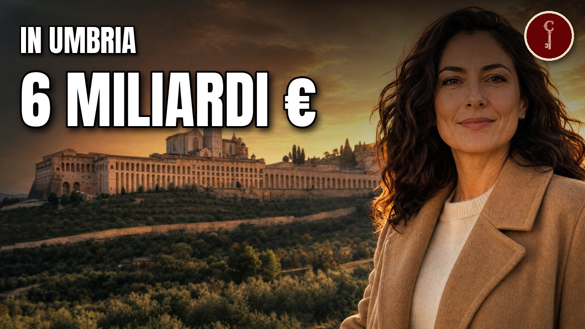

Umbria
Le 23 famiglie umbre più RICCHE (una ha trovato una foresta fossile)

Guarda il video su YouTubeLe 23 famiglie umbre più ricche, e che cosa hanno costruito. L'olio sulla tavola, il maglione di cachemire, il biscotto inzuppato nel latte, la traversina sotto il binario: molte di queste cose arrivano dall'Umbria. Ventitré famiglie, in fila da quanto fatturano le loro aziende, dalla più piccola alla più grande. In mezzo, una cava d'argilla che restituisce una foresta preistorica, un uomo che ripara frigoriferi girando in moto e un olio nato su un tovagliolo.
Le fonti, capitolo per capitolo
Solo le fonti che sostengono qualcosa detto nel video, capitolo per capitolo, nell'ordine in cui il video le usa.
23 · Lungarotti
lungarotti.it
Famiglia - LungarottiTop Aziende - Quotidiano.net
Fatturato LUNGAROTTI SOCIETA' AGRICOLA A RL dal 2019 al 2024, andamento produzione e utilevinetur.com · 30 ottobre 2026
Chiara Lungarotti premiata come produttrice dell'anno 2027 da Corriere della SeraWikipedia
Giorgio Lungarotti22 · Notari
siamispa.it
OUR SPRINGS - SIAMI GROUPsiamispa.it
OUR COMPANY - SIAMI GROUP21 · Cameli
ilsole24ore.com · 3 novembre 2024
Talenti takes over the former Italtel area in Terni and expands productioninternimagazine.com · aprile 2024
Talenti, 20 anni di outdoortopaziende.quotidiano.net
Classifica aziende di Terni20 · Urbani
artsandculture.google.com
MUSEO URBANI - Tradizional Old Truffle Baskets (Museimpresa)guide.michelin.com · 19 luglio 2024
Urbani Tartufi: la poesia della terra non muore maitopaziende.quotidiano.net
Fatturato Urbani Tartufi Srl19 · Filippi Coccetta
panorama.it
Fabiana Filippi, international luxurytopaziende.quotidiano.net
Fatturato FABIANA FILIPPI SPA dal 2019 al 2024, andamento produzione e utile18 · Angelantoni
panorama.it
Noi, campioni dell'ingegneria del freddotopaziende.quotidiano.net
Fatturato ANGELANTONI TEST TECHNOLOGIES SRL17 · Concetti
concetti.com
Concetti S.p.A.solidsprocessing.nl
Concetti celebrates a century of manufacturing16 · Coppini
casinetto.com
Coppini - Casinetto producersthestaffcanteen.com
Coppini Extra Virgin Olive Oiltopaziende.quotidiano.net
TopAziende QN, Fatturato Oleificio Coppini Angelo SpA15 · Sirci
sirsafety.com
SIR Safety System - About ussirsafety.com
SIR Safety System - Sports mentality14 · Tonti
lanazione.it
Oma, Tonti: 136 assunzioni nel 2023omafoligno.it
OMA - About usordineingegneriperugia.it
Programma Visita OMA - Ordine degli Ingegneri di Perugia13 · Briziarelli
lanazione.it
Premio Il Perugino (Briziarelli)materceramica.org
FBM Fornaci Briziarelli Marsciano S.p.A. - Mater CeramicaWikipedia
Foresta fossile di Dunarobba12 · Spagnoli
ilpost.it
Luisa Spagnoli, la storia verailsole24ore.com
Nicoletta Spagnoli: solidità e creativitàWikipedia
Bacio PeruginaWikipedia
Luisa Spagnoli11 · Campanile
saci.it
SACI Industrie - Chi siamo10 · Baldaccini
cittanuova.it · 2010
Città Nuova, articolo su Valter Baldacciniconsiglio.regione.umbria.it · 18 gennaio 2024
UMBRAGROUP - Dalla ferrovia all'aerospazio: la storia della meccanica a Folignolibreriauniversitaria.it
Valter Baldaccini: un imprenditore illuminato al servizio del bene comune. La raccolta degli scritti e dei discorsiWikipedia
UmbraGroup9 · Settimi
diyinternational.com
From Italy to the whole of Europefreshpointmagazine.it
AgriEuro, l'hobbystica per l'agricoltura viaggia da Spoleto all'Europa #vocidellortofruttatopaziende.quotidiano.net
Fatturato AGRIEURO SRL dal 2019 al 20248 · Farchioni
farchioni1780.com
History - Farchioni 1780farchioni1780.com
Our roots7 · Margaritelli
listonegiordano.com
What is behind Listone Giordano?registroaziende.it
Margaritelli Ferroviaria SpA6 · Barbetti
barbetti.it
Storia - Cementerie Aldo Barbetticemnet.com
Barbetti buys stake in Turkish producermilanofinanza.it
Cementerie Aldo Barbetti alza la cedola5 · Monini
firstonline.info
Italy is losing the oil challengelanazione.it
Monini tra fatturato d'oro e...monini.com
History - MoniniWikipedia
Monini4 · Colussi
colussigroup.it
Gruppo Colussi - Bilancio di Sostenibilità 2025colussigroup.it
Gruppo Colussi, Bilancio di Sostenibilità 2022Top Aziende - Quotidiano.net
Fatturato COLUSSI SPA dal 2019 al 2024, andamento produzione e utileWikipedia
Colussi3 · Colaiacovo
colacem.com
Brochure Gruppo Financo (italiano)milanofinanza.it
La Financo di Colaiacovo va al riassettoWikipedia
Colacem2 · Minelli
ecosuntek.com
Ecosuntek - L'Aziendaecosuntek.com
Ecosuntek - homeemarketstorage.it
comunicato risultati 20251 · Cucinelli
businessonline.it
Vide il padre umiliato in fabbrica e giurò che avrebbe fatto diversamente: il suo gruppo italiano vale miliardiEconomia Italia
Cucinelli: una Storia di Imprenditoria Italianainvestor.brunellocucinelli.com
Share capitalWikipedia
Brunello Cucinelli (azienda)Coda
Wikipedia
Acciai Speciali TerniWikipedia
PeruginaMateriali
Attribuzioni di immagini e video
Dunarobba
No machine-readable author provided. Cantalamessa assumed (based on copyright claims). · CC BY-SA 3.0

No machine-readable author provided. Cantalamessa assumed (based on copyright claims). · CC BY-SA 3.0
TorgianoMar292024 01
Hagai Agmon-Snir حچاي اچمون-سنير חגי אגמון-שניר · CC BY-SA 4.0

Hagai Agmon-Snir حچاي اچمون-سنير חגי אגמון-שניר · CC BY-SA 4.0
TorgianoMar292024 02
Hagai Agmon-Snir حچاي اچمون-سنير חגי אגמון-שניר · CC BY-SA 4.0

Hagai Agmon-Snir حچاي اچمون-سنير חגי אגמון-שניר · CC BY-SA 4.0
Torgiano - panoramio
Umbria ws · CC BY-SA 3.0

Umbria ws · CC BY-SA 3.0
TorgianoMar292024 03
Hagai Agmon-Snir حچاي اچمون-سنير חגי אגמון-שניר · CC BY-SA 4.0

Hagai Agmon-Snir حچاي اچمون-سنير חגי אגמון-שניר · CC BY-SA 4.0
Museo del Vino in Torgiano
Douglas Hoyt · CC BY-SA 2.0

Douglas Hoyt · CC BY-SA 2.0
Gubbio veduta 38
Sirleonidas · CC BY-SA 4.0

Sirleonidas · CC BY-SA 4.0
Amelia
PentaPrisma23 · CC BY 4.0

PentaPrisma23 · CC BY 4.0
Passaggio coperto
Elisa Di Barnaba · CC BY-SA 4.0

Elisa Di Barnaba · CC BY-SA 4.0
Scheggino 03
Manuelarosi · CC BY-SA 4.0

Manuelarosi · CC BY-SA 4.0
GianoDellUmbriaMar272024 03
Hagai Agmon-Snir حچاي اچمون-سنير חגי אגמון-שניר · CC BY-SA 4.0

Hagai Agmon-Snir حچاي اچمون-سنير חגי אגמון-שניר · CC BY-SA 4.0
MassaMartanaMar272024 02
Hagai Agmon-Snir حچاي اچمون-سنير חגי אגמון-שניר · CC BY-SA 4.0

Hagai Agmon-Snir حچاي اچمون-سنير חגי אגמון-שניר · CC BY-SA 4.0
Olives Fields Perugia View Umbria Italy Sep23 A7C 07909
This Photo was taken by Timothy A. Gonsalves. Feel free to use my photos, but please mention me as the author. I would m · CC BY-SA 4.0

This Photo was taken by Timothy A. Gonsalves. Feel free to use my photos, but please mention me as the author. I would m · CC BY-SA 4.0
BastiaUmbraSanMicheleArcangelo
LigaDue · CC BY-SA 4.0

LigaDue · CC BY-SA 4.0
Panorama su terni e sulle acciaierie visto dall'alto, 09
Sailko · CC BY-SA 4.0

Sailko · CC BY-SA 4.0
Allenamento Sir Safety Perugia 2015-2016 - La squadra
OTHravens 7 · CC BY-SA 4.0

OTHravens 7 · CC BY-SA 4.0
Italy - Order of Merit of the Italian Republic - Knight & Officer (Pre-2001)
GrafVonEbbell · CC BY-SA 4.0

GrafVonEbbell · CC BY-SA 4.0
MarscianoPanorama3
LigaDue · CC BY-SA 4.0

LigaDue · CC BY-SA 4.0
Foresta fossile Dunarobba - panoramio (1)
Umbria ws · CC BY-SA 3.0

Umbria ws · CC BY-SA 3.0
Perugia panoramic
Luca Vanzella · CC BY-SA 2.0

Luca Vanzella · CC BY-SA 2.0
Baci perugina
Fabuio · CC BY-SA 4.0

Fabuio · CC BY-SA 4.0
Luisa Spagnoli shop
Luigi Chiesa · CC BY-SA 2.5 it

Luigi Chiesa · CC BY-SA 2.5 it
06034 Foligno, Province of Perugia, Italy - panoramio (13)
trolvag · CC BY-SA 3.0

trolvag · CC BY-SA 3.0
Spoleto - veduta03
Diego Baglieri · CC BY-SA 4.0

Diego Baglieri · CC BY-SA 4.0
Agrieuro-logo-2019
Agrieuro SRL · CC BY-SA 4.0

Agrieuro SRL · CC BY-SA 4.0
Spoleto aprile 2022 f03
Marcok/itwiki · CC BY-SA 4.0

Marcok/itwiki · CC BY-SA 4.0
Francis of Assisi and the Wolf of Gubbio 00
Christopher John SSF · CC BY 2.0

Christopher John SSF · CC BY 2.0
Gualdo Tadino veduta 02
Sirleonidas · CC BY-SA 4.0

Sirleonidas · CC BY-SA 4.0
Gualdo tadino, veduta 01
Sailko · CC BY 3.0

Sailko · CC BY 3.0
Palais Mezzanotte - Milan (IT25) - 2022-09-03 - 3
Chabe01 · CC BY-SA 4.0

Chabe01 · CC BY-SA 4.0
Gualdo Tadino
Albarubescens · CC BY-SA 4.0

Albarubescens · CC BY-SA 4.0
Solomeo, Corciano, Province of Perugia, Umbria, Italy - panoramio (3)
trolvag · CC BY-SA 3.0

trolvag · CC BY-SA 3.0
Panorama Solomeo
Violakim99 · CC BY-SA 4.0

Violakim99 · CC BY-SA 4.0
CastelRigonePassignanoSulTrasimenoBorgo1
LigaDue · CC BY-SA 4.0

LigaDue · CC BY-SA 4.0
Solomeo, Corciano, Province of Perugia, Umbria, Italy - panoramio
trolvag · CC BY-SA 3.0

trolvag · CC BY-SA 3.0
Palazzo mezzanotte Milan Stock Exchange
Goldmund100 at it.wikipedia · CC BY-SA 3.0

Goldmund100 at it.wikipedia · CC BY-SA 3.0
Hills of Umbria
Андрей Романенко · CC BY-SA 4.0

Андрей Романенко · CC BY-SA 4.0
Scene ricostruite
Alcune scene sono ricostruite con l'intelligenza artificiale. Non sono documenti né fotografie d'epoca.
Mappe
- Confini amministrativi italiani (openpolis/geojson-italy, dati ISTAT) · CC BY 4.0 · fonte